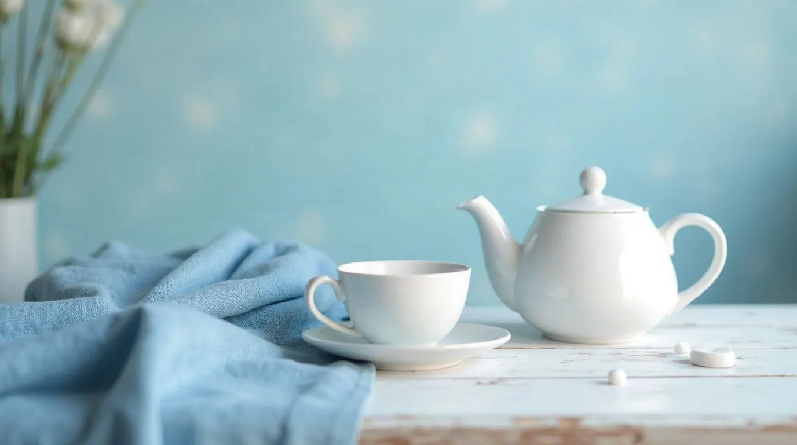
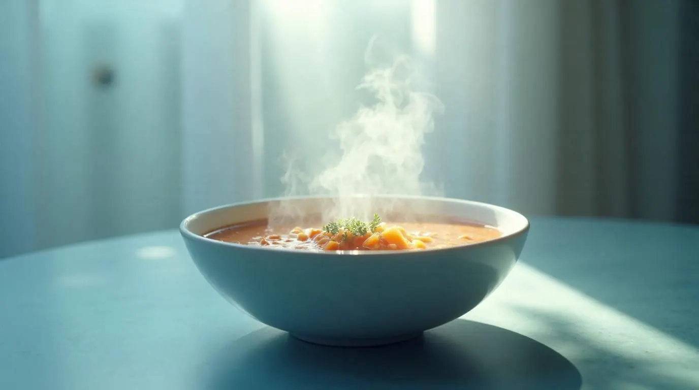

주방에서 일하면 맛보기와 짧은 간식으로 끼니를 대신하기 쉬워 속이 더부룩하거나 허기가 갑자기 몰려올 수 있어, 하루에 앉아서 먹는 끼니와 시각부터 함께 정리합니다.
여쭙는 것
- 하루에 앉아서 먹는 끼니는 몇 번인가요?
- 맛보기나 간식은 대략 어느 정도 드시나요?
- 일이 끝난 뒤 늦은 시간에 많이 먹게 되나요?
생활에서 해 볼 것
- 바쁜 시간 전에 10분이라도 앉아서 한 끼 먹기
- 맛보기는 작은 숟가락으로 정해 두고 횟수 줄이기
- 일하는 중간중간 물을 몇 모금씩 마시기
한의원에서 함께 살필 것
- 식후 더부룩함과 허기가 번갈아 오는 경우 식사 리듬과 소화 상태를 함께 살핍니다.
- 오래 서서 일한 뒤 속이 불편한 경우 몸의 긴장과 소화를 함께 살핍니다.
- 늦은 식사로 잠이 얕아지는 경우 저녁 리듬과 잠을 함께 살핍니다.
먼저 확인이 필요한 신호
- 검은 변이나 피가 섞인 변을 보는 경우
- 체중이 이유 없이 줄어드는 경우
- 삼키기 어렵거나 구토가 반복되는 경우

요리하는 분들은 하루 종일 음식 곁에 있지만 정작 앉아서 한 끼를 먹는 날은 드뭅니다. 맛보기로 조금씩 먹다 보면 배는 애매하게 부르고, 일이 끝나면 허기가 몰려옵니다. 이럴 때는 하루 먹는 시각과 양을 먼저 정리하는 것부터 시작합니다.
왜 이런 불편이 생길 수 있나요
- 맛보기는 양과 시간이 들쭉날쭉해서 위가 규칙적으로 비고 차는 리듬을 잡기 어렵습니다.
- 바쁜 시간대에 서서 급하게 먹으면 덜 씹고 공기를 많이 삼켜 더부룩함이 생기기 쉽습니다.
- 덥고 습한 주방에서 오래 일하면 물을 마시는 때를 놓치는 경우가 있습니다.
- 일이 끝난 늦은 밤에 몰아 먹으면 잠자리까지 속이 무거울 수 있습니다.

먼저 이렇게 여쭙니다
- 하루에 앉아서 먹는 끼니는 몇 번인가요?
- 맛보기나 간식은 대략 어느 정도 드시나요?
- 일이 끝난 뒤 늦은 시간에 많이 먹게 되나요?
- 물은 하루에 얼마나 드시나요?
- 속쓰림, 더부룩함, 변의 변화가 있나요?
일상에서 먼저 해 볼 수 있는 것
- 바쁜 시간 전에 10분이라도 앉아서 한 끼 먹기
- 맛보기는 작은 숟가락으로 정해 두고 횟수 줄이기
- 일하는 중간중간 물을 몇 모금씩 마시기
- 일이 끝난 뒤에는 기름진 음식보다 소화가 편한 음식으로 가볍게 먹기
- 늦은 식사 뒤에는 바로 눕지 말고 시간 여유 두기
예를 들어 점심 장사가 11시에 시작된다면 10시 반에 밥과 국, 반찬 두 가지로 15분 정도 앉아서 먹고, 저녁 장사 전 4시쯤 다시 짧게 한 끼를 먹는 식으로 바쁜 시간 앞에 끼니를 배치해 보세요. 맛보기는 그 사이에 작은 숟가락으로만 합니다.

한의원에서 함께 살필 수 있는 경우
- 식후 더부룩함과 허기가 번갈아 오는 경우 식사 리듬과 소화 상태를 함께 살핍니다.
- 오래 서서 일한 뒤 속이 불편한 경우 몸의 긴장과 소화를 함께 살핍니다.
- 늦은 식사로 잠이 얕아지는 경우 저녁 리듬과 잠을 함께 살핍니다.
좋은꿈참사랑한의원에서는 하루 식사 흐름과 속이 불편한 때를 먼저 충분히 듣고, 진맥을 기본으로 하고 필요하다고 판단될 때 설진·복진을 더해 살핀 뒤, 상태에 맞춰 침이나 한약 상담 등을 정합니다. 귀가 전에는 근무 일정 안에서 지킬 수 있는 식사 순서를 함께 정리해 드립니다.
이렇게 기록해 오시면 상담이 쉬워집니다
- 하루 동안 앉아서 먹은 끼니와 시각
- 맛보기와 간식의 대략적인 양
- 속쓰림, 더부룩함, 변의 변화가 있었던 날
- 복용 중인 위장약이나 영양제

이런 증상은 먼저 확인이 필요합니다
- 검은 변이나 피가 섞인 변을 보는 경우
- 체중이 이유 없이 줄어드는 경우
- 삼키기 어렵거나 구토가 반복되는 경우
- 속쓰림이 몇 주째 계속되며 점점 심해지는 경우
복용 중인 위장약이나 다른 약은 처방한 의사와 상의 없이 줄이거나 끊지 않습니다.
한눈에 보는 표
| 구분 | 핵심 |
|---|---|
| 여쭙는 것 | 하루에 앉아서 먹는 끼니는 몇 번인가요? 맛보기나 간식은 대략 어느 정도 드시나요? |
| 생활에서 해 볼 것 | 바쁜 시간 전에 10분이라도 앉아서 한 끼 먹기 맛보기는 작은 숟가락으로 정해 두고 횟수 줄이기 |
| 한의원에서 함께 살필 것 | 식후 더부룩함과 허기가 번갈아 오는 경우 식사 리듬과 소화 상태를 함께 살핍니다. 오래 서서 일한 뒤 속이 불편한 경우 몸의 긴장과 소화를 함께 살핍니다. |
| 먼저 확인이 필요한 신호 | 검은 변이나 피가 섞인 변을 보는 경우 체중이 이유 없이 줄어드는 경우 |
자주 묻는 질문
맛보기도 식사로 쳐도 되나요?
양과 시간이 들쭉날쭉해서 식사 리듬을 잡기 어렵습니다. 하루 한두 번은 앉아서 먹는 끼니를 정해 두기를 권합니다.
일 끝나고 먹는 늦은 식사는 어떻게 하나요?
양을 줄이고 기름진 음식과 술을 피하면 잠과 다음 날 속이 편하다는 분이 많습니다.
근무가 길어 평일에 오기 어렵습니다.
좋은꿈참사랑한의원은 토·일·공휴일에도 09:30~15:00(점심시간 없음)에 진료합니다. 평일은 09:30~20:00(점심 13:00~14:00)입니다.
손님 음식 간을 보느라 짠 것을 자주 먹게 돼요.
맛보기 뒤에는 물을 한두 모금 마시고, 앉아서 먹는 끼니에서는 국물을 조금 덜어 먹는 것부터 시작해 보세요.
이 글은 일반적인 건강 정보이며 개인의 진단이나 치료를 대신하지 않습니다. 증상이 있거나 복용 중인 약이 있다면 진료를 통해 확인하세요. 치료 효과는 개인마다 다를 수 있습니다.
작성 기준: 일반적으로 알려져 있는 건강 정보를 참고해 정리했습니다(대표원장 감수). 증상 기록은 1~2주 동안 하루 1회, 비슷한 시간에 적어 오시면 지난 상태와 비교하기 쉽습니다.
좋은꿈참사랑한의원은 재진 때 지난번 이야기부터 이어서 여쭙니다. 진료시간과 예약은 오시는 길에서 확인하세요.